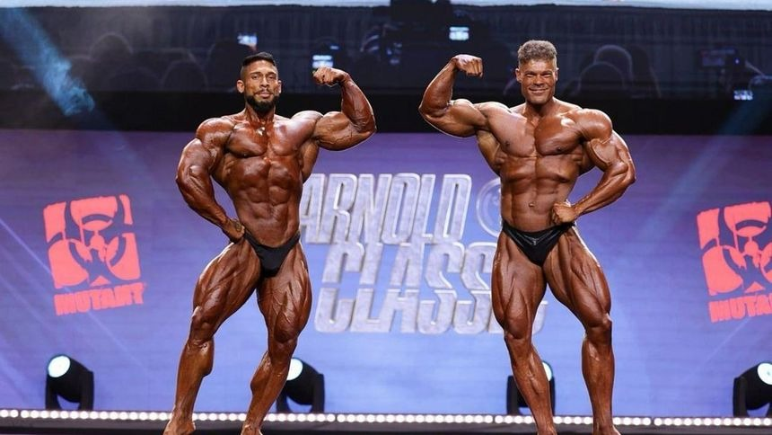

Hypertrophy is the scientific term for 'building muscle', which is the process of tissue stimulation and repair. Hypertrophy can be achieved in multiple training styles, such as bodybuilding, powerlifting, calisthenics, crossfit, high-intensity interval training (HIIT), and more. In this website, we will be mainly focusing on bodybuilding and learn why this style of training is the best for muscle hypertrophy.
Bodybuilding is a type of weightlifting style that is focused on building and increasing muscle mass through optimal resistance training, recovery and fatigue management, and healthy nutrition and supplements. In short, bodybuilding revolves over the principle of progressively overloading, where muscles adapt and grow in response to resistance training. By understanding the science behind muscle hypertrophy, recovery, and nutrition, you will be able to build your dream physique and achieve your goals in a more efficient manner.

Powerlifting
Powerlifting is focused on increasing muscle strength on three main lifts: squat, bench, and deadlift (SBD).
Unlike bodybuilding, powerlifting programs are more geared towards very heavy weightlifting and low repetitions. Powerlifters
often never go to muscular failure when training.
Calisthenics
Calisthenics is focused on bodyweight exercises to build muscle, endurance, flexibility, and coordination. Unlike bodybuilding
or powerlifting, calisthenics uses gravity and body mechanics to create resistance, as opposed to weights. Calisthenics exercises
can range from push-ups and pull-ups to more advanced techniques like muscle-ups and the front lever.
Crossfit
Crossfit combines strength training, cardiovascular training, and gymnastics into constantly varied workouts.
This training style trains individuals in multiple styles of training, instead of specializing in one. The workouts constantly change,
so one day might focus on heavy lifting and running, while the other might focus on pull ups and high-intensity interval training (HIIT).
High-intensity interval training (HIIT)
High-intensity interval training (HIIT) is a training method that focuses on short intervals of high intensity training.
This can range from 8 rounds of 20 seconds of jump squats, 30 seconds of burpees, and 20 lunges.
Doing these short bursts of high intensity workouts can maximize calorie burn, boost metabolism, and improve cardiovascular health.
Each HIIT session usually takes only about 20-30 mins to complete.